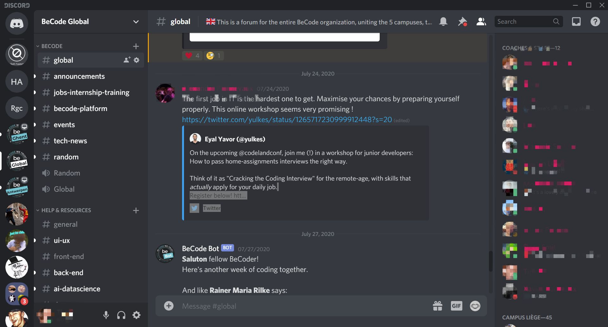

Discord Decoded
Discord is an online communication tool similar to programs such as Skype or TeamSpeak, or professional communications platforms like Slack. It supports video calls, voice chat, and text, allowing users to get in touch however they please. In this manual I'll try to cover everything you possibly need in order to use it. If you have any questions after checking out the manual and the FAQ feel free to send me a mail on the address tim.broos@becode.org with the subject "Discord Decoded".

Overview
1. Getting started
2. What's where
3. Settings
4. Friends
5. Servers
6. Communication
7. Notifications
8. Privacy settings
9. Server administration
1. Getting started
Browser or application?
Discord can be run as an application but also in the browser. You don't even need an account if you decide to run it in the browser. If you want to use Discord on a regular basis I do heavily recommend using the application, since you then unlock it's full potential. Some settings are not available on the browser and to optimise your notifications you'll need the application. The app can also login when you start your OS, so that will save you some time.
Installation
You can install Discord on multiple OS's but also on your smartphone or tablet. You can download and install it through this link or one of the links below depending on your OS.
Linux deb
Linux tar.gz
Windows
Mac
Android
10. FAQ
- There's some loud music / noise when I join a call, how do I turn it off?
- In the voice channel there might be a bot playing music or someone making loud noises, you can mute it by right clicking the mute target.
- How do I selectively mute notifications?
- There's 2 types of notifications, general and server notifications. Check this out if you want to know more about managing them.
- I can't hear anybody, how come?
- There's multiple possibilities. First check if you are deafened. If it's the case, un-deafen yourself. If that's not the case take a look if the person you're talking to is muted.
Finally, if you still don't hear anybody there's something wrong with either your audio levels or your settings. Try first turning your volume all the way up. If you still don't hear anything there's something wrong with your settings.
- Nobody hears me, how come?
- There's multiple possibilities. First check if you are muted. If that's not the case take a look if the person you're talking to is deafened.
Finally, if people still don't hear you there's something wrong with either your microphone or your settings. You can check if your mic works by visiting this website and following their instructions. If your microphone works there's something wrong with your settings
- How do I organise a presentation in Discord?
- First of all you'll need to let your audience know where to find you. You can privately contact each one or you can mention a group of specific people. After that you'll join a voice channel together with your audience. You'll probably want them to mute themselves so you can present without noise in the background (unless they have a question of course).
Next, the choice is up to you as to how you wish to present. You're ready to give a presentation with your voice only if you prefer but you can also stream your camera. What I prefer most is sharing my screen and presenting something on my screen to the audience.
- Someone called me privately but I didn't notice, can I turn on the calling sound for it?
- Yes you can, but only if you are friends with this person. If you're not you'll get a notification that's the same as a text message. If you are friends though you'll get a popup window when that person calls you.
- My microphone is making a lot of noise, can I filter it?
- There's so many servers in my list, how do I manage them?
- You can make folders and put your favourite servers together, your gaming servers, your work-related servers, etc. Just drag the server over another server / folder you want to group it with.